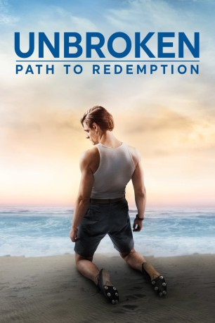
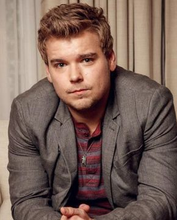
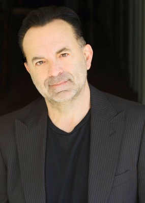

#10787 Unbroken: Path to Redemption
 
 IMDB-Wertung: 5.7 / 10
IMDB-Wertung: 5.7 / 10  Tomatometer: 38
Tomatometer: 38  Metascore: 39
Metascore: 39 
When the war ended, his battle began. Based on Laura Hillenbrand's bestselling book, UNBROKEN: PATH TO REDEMPTION begins where Unbroken ends, sharing the next amazing chapter of Olympian and World War II hero Louis Zamperini's powerful true story of forgiveness, redemption, and amazing grace.
BDRIP DUBBED
Jahr: 2018
Dauer: 98 Minuten
FSK:
Land: USA Studio: Pure Flix EntertainmentTonspuren: DD5.1 - ,
Untertitel: Deutsch,
Auflösung: 1080p (1920x1080) Größe: 8284 MB
Genre: Drama, Biographie
Regisseur: Harold Cronk
Drehbuch: Richard Friedenberg, Ken Hixon, Laura Hillenbrand
Soundtrack: Brandon Roberts
Darsteller:
- Samuel Hunt als Louis Zamperini
 Merritt Patterson als Cynthia Applewhite
Merritt Patterson als Cynthia Applewhite- Bobby Campo als Pete Zamperini
 David Sakurai als Watanabe 'The Bird'
David Sakurai als Watanabe 'The Bird'- Vincenzo Amato als Anthony Zamperini
- Maddalena Ischiale als Louise Zamperini
 Gianna Simone als Sylvia Zamperini
Gianna Simone als Sylvia Zamperini- Ali Eagle als Virginia Zamperini
- Will Graham als Billy Graham
-  Andrew Caldwell als Harry Read
 Gary Cole als Dr. George Bailey
Gary Cole als Dr. George Bailey Bob Gunton als Major Zeigler
Bob Gunton als Major Zeigler- David DeLuise als Howard Lambert
- Scott Subiono als Fred Porter
 Vanessa Bell Calloway als Lila Burkholder
Vanessa Bell Calloway als Lila Burkholder April Bowlby als Cecy Phillips
April Bowlby als Cecy Phillips- Maddie McCormick als Valerie
- Christopher Wallinger als Allen 'Phil' Philips
- Derek Brandon als Chris Johnson
- Michael Broderick als Army Colonel
- James Immekus als Robert Trumball
 Miguel Pérez als Father Cardarelli
Miguel Pérez als Father Cardarelli- Ken Narasaki als Japanese Doorman
- Matt Angel als Carlos
 David Cohen als Church Attendee (uncredited)
David Cohen als Church Attendee (uncredited)-  Calvin Dean als Mobster #2 (uncredited)
- Scott Felix als Handsome Young Man (uncredited)
- Jose Feng als POW #1 (uncredited)
 Frederick Keeve als Attendee / Guest (uncredited)
Frederick Keeve als Attendee / Guest (uncredited)- Mark Krenik als Distinguished Philanthropist (uncredited)
 Trisha LaFache als Receptionist (uncredited)
Trisha LaFache als Receptionist (uncredited)- Peter Mayer-Klepchick als Photographer (uncredited)
- Deborah Quayle als Mrs. Applewhite (uncredited)
- Ian Scott Rudolph als Milkman (uncredited)
- Esther Villatoro als Cynthia's Friend (uncredited)
- John Davis Walker als Churchgoer (uncredited)
- Ikumi Yoshimatsu als Fashionable Japanese Woman (uncredited)
- Donald Martin Stark als Reggie
- Lucky Afaratu als (uncredited)
- Allison Bryant als Susan Graham (uncredited)
- Vicki Jo Costanzo als Caviar Lady (uncredited)
- Tony Jacobsen als Audience Member (uncredited)
- Chris Kanapa als Military Police Officer (uncredited)
- Michael Kobulnicky als Church Goer (uncredited)
- Ivy Odame als Regular Church Goer (uncredited)
- Kyle J.M. Thompson als American POW (uncredited)
- Katerina Vlasenko als Churchgoer (uncredited)
Datei: X:\2-Dilogie(N-Z)\Unbroken\Unbroken Path to Redemption (2018, FSK, 1920x1080).mkv seit 25.02.2019
Festplatte: HD Collection-2(A-Z)-3(A-M)
 Alle Filme aus Gruppe '2-Dilogie(N-Z)\Unbroken'
Alle Filme aus Gruppe '2-Dilogie(N-Z)\Unbroken'
- Unbroken
- Unbroken: Path to Redemption (der aktuelle Film)